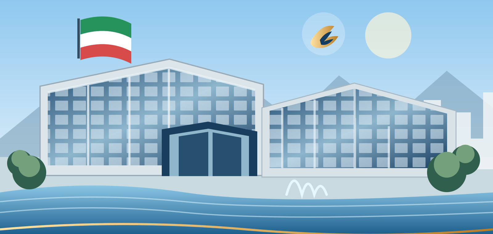

خدمات هوشمند · راهبری یکپارچه
به هفت خوش آمدید
همه مسیرهای کاری، سامانهها و خدمات سازمان در یک نقطه

ورود به سامانه←برای ورود به سامانه اصلی، تصویر مرکزی را انتخاب کنیدهمه مسیرهای کاری، سامانهها و خدمات سازمان در یک نقطه

ورود به سامانه←برای ورود به سامانه اصلی، تصویر مرکزی را انتخاب کنید